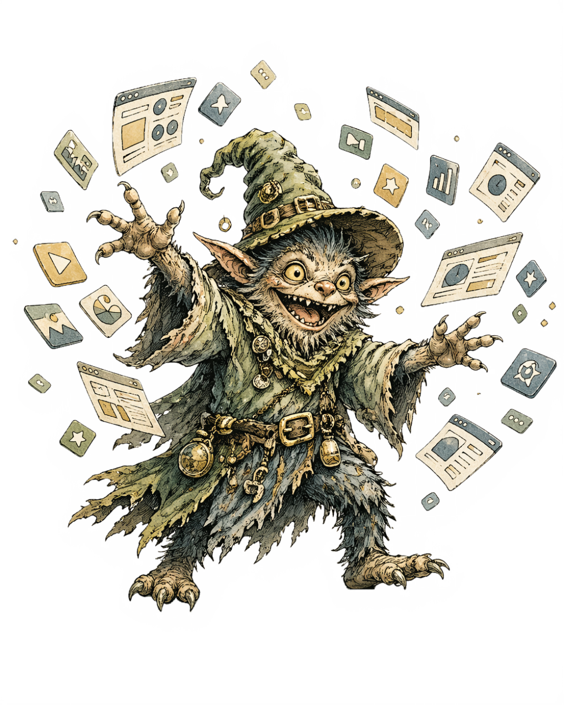
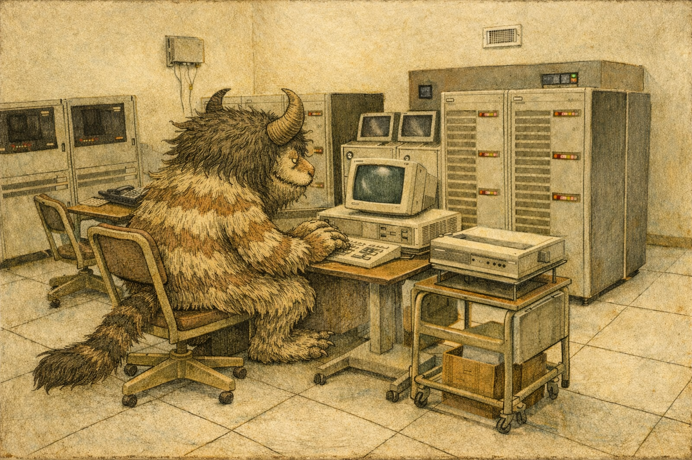
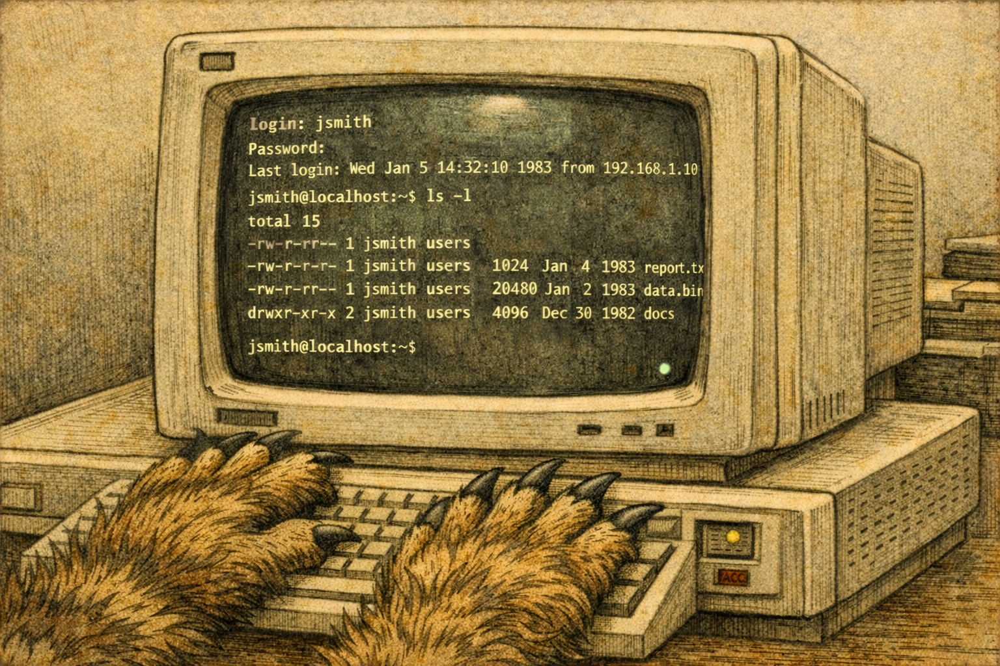
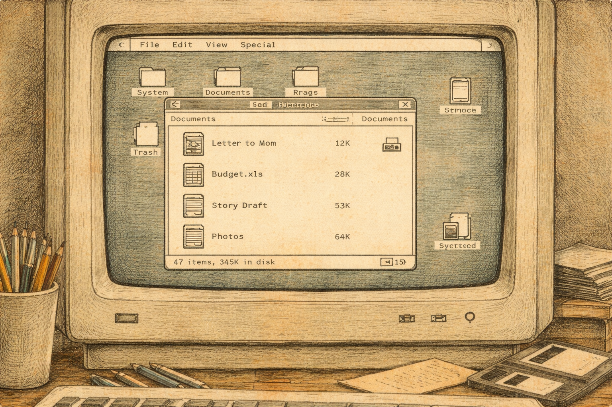
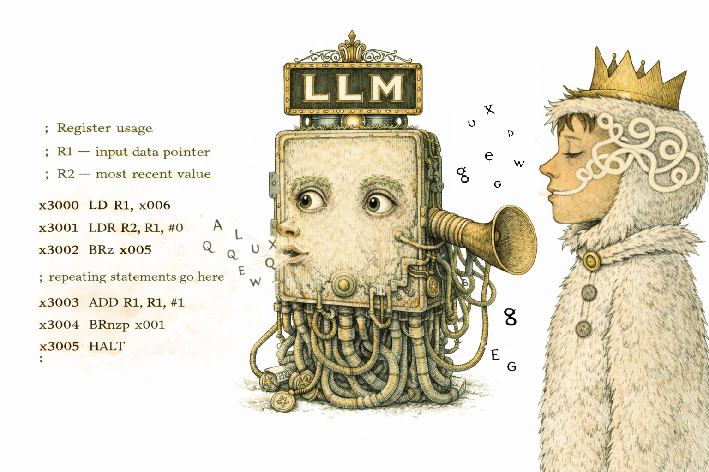
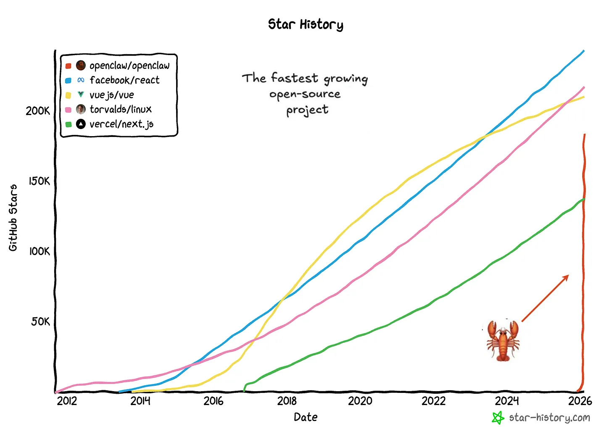
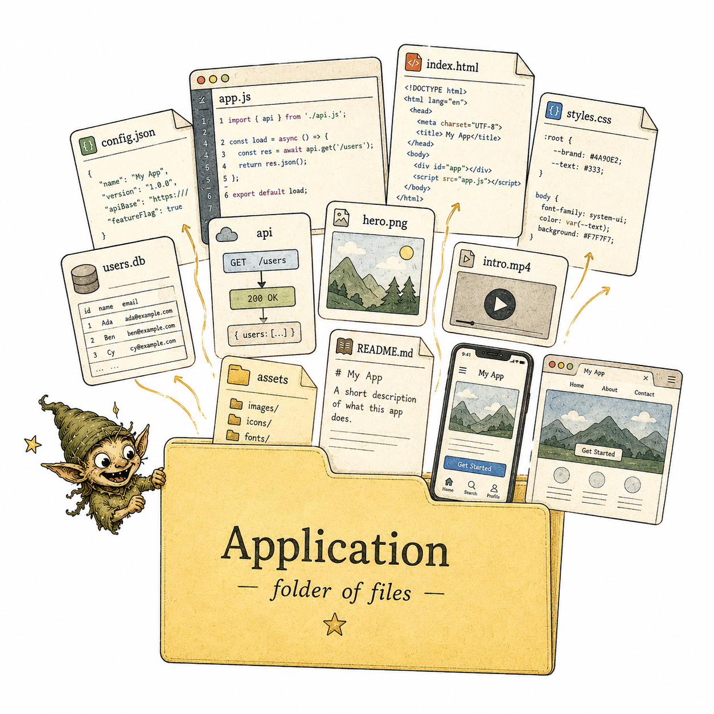
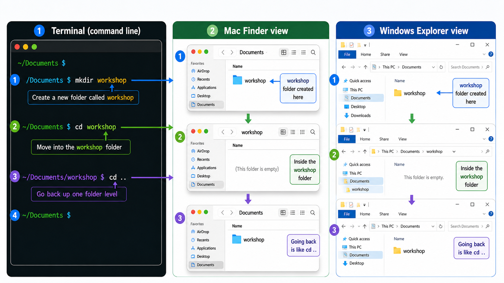
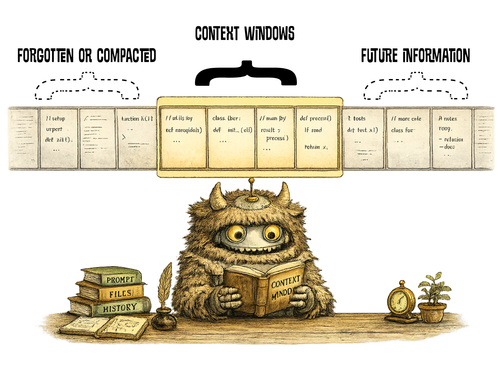

Build Your First App With AI In One Evening
Thursday, 7 May
Impact Hub Berlin

Windows Users
If WSL is not already installed, start it now.
Open PowerShell or Command Prompt and run:
wsl --install
WhatsApp.
For Doc Sharing
How This Will Work
- You'll install and configure an AI coding agent on your laptop.
- You'll build a fully functioning productivity app that you get to take away with you.
- You'll receive the slides and course material, so you do not need to take notes.
- Things will break; raise your hand and someone will come help.
- If you see green text in the slides, it is code you can copy.
Who Are You And Why Are You Here?
Agenda
- 18:00 → 18:05Sit down and get comfortable
- 18:05 → 18:20Intro & Context 👈🏾
- 18:20 → 19:30Hands-on & Build
- 19:30 → 19:50Advanced Topics
- 19:50 → 20:00Wrap Up & Next Steps
- 20:00 → 21:00Hangout & Chat
Intro & Context
Phil
- Engineering Leadership Consultant & Fractional CTO
- Brit "stuck" in Berlin
- 25+ years in software engineering & leadership
- Author of "Punk Leadership"
- Founder of Brainfork, an AI knowledge management platform
- Fixer of unfixable engineering teams
Igor
- Founder of Handpicked Berlin
- Previously in NGOs, corporate, and scale-up environments
- Focused on events, projects, data, and product
- Basic Python knowledge
- The "ideas" guy, enabled by AI
What We Built
Phil
- Personal Outreach Agent
- CMS Replacement
- All of Brainfork
- This Presentation
- Agentic Primordial Soup Experiment
- Loads more..
Igor
- Email extractor / newsroom
- Personal task manager
- Newsletter strategy workshop
- Firefox extension
- New handpickedberlin.com page
- Salary Trends reports (v2)
- Insiders Dinner Club operations help
The Terminal
The Problem
Computers think like this 👇
; Register usage ; R1 -- input data pointer ; R2 -- most recent value ; x3000 LD R1, x006 ; load data pointer x3001 LDR R2, R1, #0 ; load data value x3002 BRz x005 ; branch to end if zero ; ; repeating statements go here ; x3003 ADD R1, R1, #1 ; increment data pointer x3004 BRnzp x001 ; branch back to top x3005 HALT ; ; data section ; x3006 x4000 ; address of data
Humans think like this 👉



Then "Magic
Happened"

"..the notion that business applications exist, that's probably where they'll all collapse, right in the agent era." — Satya Nadella, CEO of Microsoft
Agent
(noun) /ˈeɪdʒ(ə)nt/
A person or thing that takes an active role or produces a specified effect.
Proven Power of
Agentic Coding
The majority of Claude Code is code now written with Claude Code.
— Boris Cherny, Creator of Claude Code

Coding Agents
Claude Code
- Anthropic
- Launched in Feb 2025
- CLI and IDE plugin
- Reads your codebase, edits files, runs commands, and works well from the terminal or an IDE.
Codex
- OpenAI
- Launched in May 2025
- CLI, IDE plugin, and app
- OpenAI's coding agent for reading code, making edits, and running software tasks.
Others worth knowing
- Google Gemini CLI
- Kimi Code CLI
- iFlow CLI
- Pi
- Github Copilot CLI
- Kiro CLI
- Aider
- Goose
Agenda
- 18:00 → 18:05Sit down and get comfortable
- 18:05 → 18:20Intro & Context
- 18:20 → 19:30Hands-on & Build 👈🏾
- 19:30 → 19:50Advanced Topics
- 19:50 → 20:00Wrap Up & Next Steps
- 20:00 → 21:00Hangout & Chat
Hands-on
Open a Terminal
Get The Docs 👉
bennettphil.github.io/app-in-an-evening/
All applications are just folders.

Step 1: Open The Terminal
macOS
- 1. Press ⌘ + Space to open Spotlight
- 2. Type Terminal
- 3. Press Return
Or: Applications → Utilities → Terminal
Windows (WSL)
- 1. Open Command Prompt or PowerShell
- 2. Run wsl
First-time setup asks for a username & password.
Step 2: Install Dependencies
1. Install Homebrew
/bin/bash -c "$(curl -fsSL https://raw.githubusercontent.com/Homebrew/install/HEAD/install.sh)"
Once the install has completed it will ask you to copy, paste and run some commands. Copy each one separately and run them in the terminal.
2. Install Node.js
brew install nodejs
Node.js is the runtime our agents need. Homebrew makes installing it a one-liner.
Step 3: Install an Agent
Install one of these in your terminal. You only need to do this once.
Claude Code
npm install -g @anthropic-ai/claude-code
Codex
npm install -g @openai/codex
Gemini
npm install -g @google/gemini-cli
Step 4: Make A Workshop Folder
A clean place to keep everything we make today. Run these one at a time.
1. Create the folder
mkdir workshop
mkdir = "make directory". Nothing prints — that's normal. The folder now exists in your home folder.
2. Step into it
cd workshop
cd = "change directory". Your prompt will now show you're inside workshop.
Three Views of the Same Thing
Terminal, Finder and Explorer all walk the same folders.

Step 5: Start an Agent
From inside your project folder, launch the agent and paste the prompt above.
Claude Code
claude
Codex
codex
Gemini
gemini
Slash Commands
You might be familiar with this from Slack, Telegram, etc.
/[some command]
A full guide is on the course website.
Step 6: Choose a Model and "Thinking Level"
More "Power" = More Cost
Claude
/model
- Opus: more powerful, use for more complicated tasks
- Sonnet: cheaper, use for simpler everyday tasks
/effort auto
You can turn this up later if you need to.
Codex
/model
- Strongest / default coding model: use for harder tasks
- Mini / smaller model: cheaper, use for simpler everyday tasks
Set reasoning to "medium" for now; turn it up later only if the task is genuinely hard.
Prompting
The "Enthusiastic Intern" model

Project Memory
A note your agent reads every time
CLAUDE.md
What Claude Code reads at the top of every session — your project's standing instructions.
AGENT.md
The same idea, shared across other tools (Codex, Cursor, etc.) — one file, many agents.
- Who you are, how you like to work, what tone to use.
- Project conventions: stack, folder layout, commands to run.
- Things not to touch — secrets, generated files, prod data.
- Lives in your project folder and grows as the project does.
Setup
We will start by building the structure of our application.
Step 7: Configuring the Agent
Before we build anything, we'll teach the agent how to talk to us — non-technical, jargon-free, one step at a time. This sets the tone for the whole project.
What to do
Grab the Setup Prompt from the course website.
Copy it, paste it into your agent, and let it run. We'll walk through what's actually inside it on the next slide.
bennettphil.github.io/
# About Me I have no coding or technical background. This may be the first time I've ever used a terminal or coding tool. Please treat me accordingly. # How to Communicate With Me - Explain what a command does BEFORE showing it to me - Translate error messages into plain English — don't assume I can read them - Give me one clear path forward, not options and tradeoffs - Use numbered steps when asking me to do something - Check in after each significant step before moving on - Before any significant action, tell me: what we're doing, what will happen, and whether it can be undone Tone: encouraging, jargon-free, treat all questions as normal questions. # My Goal I want to feel in control of what we're building — prioritise my confidence and comprehension over speed or technical elegance. --- # The Task I want to set up the foundations for a desktop app that runs on Mac, Windows, and Linux. I'll describe what the app actually does in a follow-up prompt — for now, just scaffold the project so we have somewhere to build from. Pick a sensible default framework for cross-platform desktop apps. Tell me what it is and why it's a good default in 2–3 sentences. Don't compare alternatives. Then: 1. Scaffold the project structure 2. Install all dependencies 3. Launch the app so I see a window open on my machine 4. Create a project instructions file that you (the coding agent) will read on every future session in this project. Use whatever filename and location is conventional for the tool I'm using right now — for example `CLAUDE.md`, `AGENTS.md`, `.cursorrules`, `CONVENTIONS.md`, or similar. If your tool has a built-in command to generate or initialise this file, use it. If you're not sure which convention applies, default to `AGENTS.md` at the project root and tell me that's what you've done. 5. Insert the text between <<<START>>> and <<<END>>> below at the very top of that file, verbatim. If a similar section already exists, replace it. Leave any other existing project-specific content alone. 6. Show me the inserted block, and tell me the filename and path you used, so I can confirm the communication style is in place. 7. Stop. We'll build the actual features in a later prompt. **Done means:** the app window opens on my machine, the project instructions file exists with the block at the top, and you've shown me both the block and the filename. **If anything fails** — install errors, missing commands, the app won't launch — stop and explain in plain English what went wrong before retrying. Don't paste raw error output at me. When everything is running, tell me: what I should see, where to find it, and what we're building next. --- <<<START>>> # About Me I have no coding or technical background. This may be the first time I've ever used a terminal or coding tool. Please treat me accordingly. # How to Communicate With Me - Explain what a command does BEFORE showing it to me - Translate error messages into plain English — don't assume I can read them - Give me one clear path forward, not options and tradeoffs - Use numbered steps when asking me to do something - Check in after each significant step before moving on - Before any significant action, tell me: what we're doing, what will happen, and whether it can be undone Tone: encouraging, jargon-free, treat all questions as normal questions. # My Goal I want to feel in control of what we're building — prioritise my confidence and comprehension over speed or technical elegance. <<<END>>>1 2 3 4 5
1. Tell it who you are
Set the communication style up front — non-technical, plain English, encouraging.
2. Pick the framework for me
Don't ask the user to choose a stack — pick a sensible default and explain it briefly.
3. What to do, in order
Numbered steps so the agent works incrementally and you can confirm as it goes.
4. Save the rules for next time
Write the comms preferences to CLAUDE.md / AGENTS.md so every future session inherits them.
5. Define done & failure
"Done means…" and "If anything fails…" — give the agent a clear stop condition and a fallback.
Build
Now we build
Step 8: Now We Build the Application
The scaffolding is in place. Now we tell the agent what we're actually building — the features, the look, the behaviour.
What to do
Grab the Build Prompt from the course website.
Paste it into the same session. We'll walk through how it's structured on the next slide.
bennettphil.github.io/
# Mode: Build Keep using the communication style from the project instructions file. I'm still non-technical. # What I want A desktop app that helps me prioritise tasks using the Eisenhower matrix. # How it works 1. **Add tasks.** I type a short to-do list. 2. **Prioritise.** I drag each task onto one of four quadrants of an Eisenhower matrix : Urgent + Important, Important / Not Urgent, Urgent / Not Important, Neither. 3. **Plan.** I click "Plan" and see my tasks grouped: Do first, Schedule, Delegate, Drop. 4. **Execute.** Each task has a state: todo, in progress, paused, done. I can change states. From here, I can add more tasks or re-prioritise. # Acceptance criteria - Tasks (and their states and quadrants) survive closing and reopening the app. - Menu bar/system tray icon to open the app. Closing the window doesn't quit it. - The matrix shouldn't get cluttered if I add lots of tasks. - Drag-and-drop works on Mac, Windows, and Linux. - The labels should be shown on the axis of the matrix - The plan should be presented as a list showing the highest priority tasks at the top. # Build it in steps Build one piece at a time. After each piece, tell me what to click to test it, and wait for me to confirm before moving on. Suggested order: add tasks → prioritise → plan → states → menu bar. For small choices I haven't mentioned (colours, layout details), pick something sensible and tell me what you picked in one line. Don't ask me to choose.1 2 3 4 5
1. Set the mode
"Mode: Build" tells the agent which job it's doing — and to keep using your saved communication style.
2. One-line goal
Say what you want in a single sentence. The whole prompt hangs off this.
3. How a user uses it
Walk through the user flow as numbered steps — concrete, in order, with the words you'd say out loud.
4. Definition of done
Acceptance criteria: the things that must be true before you'd call it shipped.
5. Build in steps, not in one shot
Tell it to deliver in pieces and pause for confirmation — small choices, it makes for you.
What if something doesn't work?
Something will break — no software is perfect. The trick is telling the agent what you saw, what you expected, and letting it translate the error back into plain English.
What to do
Grab the Debug Prompt from the course website.
Fill in what you expected, what you saw, and what you'd already tried. Paste it in. We'll walk through the structure next.
bennettphil.github.io/
# Mode: Debug Keep using the communication style from the project instructions file. I'm still non-technical. Don't paste raw error output at me — translate it. # Expected behaviour What I expected the app to do, and what I was doing when the problem happened. - I clicked "Plan" after dragging three tasks into the Urgent + Important quadrant. - I expected to see those three tasks at the top of the "Do first" list. # Current behaviour What's actually happening instead. - The Plan screen opens but it's empty. - The tasks are still there on the matrix when I go back — they didn't get deleted. - It happens every time, not just once. # Context - Relevant files/paths: see `src/plan/` and wherever the matrix state lives. - Any error message I can see (in the app, in a popup, or in the dev console if you tell me how to open it). - Any log files you know about — tell me where to look and I'll paste what's there. - This started after we added the "Schedule / Delegate / Drop" grouping. # What I've already tried - Quit the app and reopened it — same result. - Added a fresh task and dragged it in — still empty Plan screen. - I have NOT touched any code or settings myself. # How I want you to work 1. Form a hypothesis in plain English before changing anything. 2. Tell me the smallest test we can run to confirm it — one step at a time. 3. Only change code once we agree on the cause. 4. After the fix, tell me what you changed and why, in one paragraph. # Acceptance criteria - Clicking "Plan" shows my prioritised tasks, highest priority first. - Existing tasks and quadrants are not lost. - Closing and reopening the app still works. # Notes If you discover the real bug is somewhere else, stop and tell me before fixing it — don't quietly expand the scope.1 2 3 4 5
1. Switch the mode
"Mode: Debug" — same comms style, different job. No raw error dumps.
2. Expected vs. actual
Two short stories: what you thought would happen, and what's happening instead. Concrete actions, not vibes.
3. Where to look & what changed
Point at files, errors, logs — and mention what changed just before things broke.
4. Hypothesis before fix
Make the agent reason out loud and propose the smallest test before touching code.
5. Don't expand the scope
If the real bug is somewhere else, stop and tell you — don't quietly fix five things at once.
Agenda
- 18:00 → 18:05Sit down and get comfortable
- 18:05 → 18:20Intro & Context
- 18:20 → 19:30Hands-on & Build
- 19:30 → 19:50Advanced Topics 👈🏾
- 19:50 → 20:00Wrap Up & Next Steps
- 20:00 → 21:00Hangout & Chat
Advanced Topics
— Sub-agents
— Skills
Sub-agents
Add me to your project!
Sub-agents
Claude
Easy
/agents
Paste in the sub-agent prompt
Codex
Less Easy
Follow the guide on the course site.
Skills
Add anyone to your project
Skills
Via skills.sh
Add a frontend design skill to your project:
npx skills add https://github.com/anthropics/skills --skill frontend-design
Agenda
- 18:00 → 18:05Sit down and get comfortable
- 18:05 → 18:20Intro & Context
- 18:20 → 19:30Hands-on & Build
- 19:30 → 19:50Advanced Topics
- 19:50 → 20:00Wrap Up & Next Steps 👈🏾
- 20:00 → 21:00Hangout & Chat
Homework
"Move Fast, Break Things" Work on your project for a few hours and see what you can achieve.
Next Week
What We'll Cover
- "Open Office": review issues and provide hands-on support
- Show & Tell: show us what you made
- What next: distribution, what agents aren't good at
Pick a Date
Tuesday, 19 May
18:00 – 20:00
Thursday, 21 May
18:00 – 20:00
Igor,
Selfie!
Good Luck — Social Time!
Session Two
Don't Be
Afraid Of
The Terminal
Thursday, 7 May · Impact Hub Berlin
Session Two
Agenda
- 18:00 → 18:45Advanced Topics & Distribution
- 18:45 → 19:15Show and Tell
- 19:15 → 19:55Questions
- 19:55 → 20:00Wrap Up
- 20:00 → 21:00Free Time
Which one should I use?
AI Coding Surfaces
|
Terminal Claude Code, Codex CLI |
Code Editor VS Code, Cursor |
Browser Claude web, ChatGPT web, Codex web |
Desktop App Claude Desktop, ChatGPT app, Codex app |
|
|---|---|---|---|---|
| Best for | Quick build-test-fix work, scripts, repeat jobs | Everyday coding with help inside the editor | Research, planning, questions, longer tasks | Cross-app help, less tab switching |
| Biggest plus | Closest to your real project and tools | Best mix of speed and easy review | Good for bigger tasks you can hand off | Can work with local apps and files |
| Watch out for | Harder to learn, less visual | Depends on your editor and plugins | May be less connected to live local files | What it can do varies by product |
| What it can see | Project files, commands, scripts | Open files, your project, selected code | Chats, uploaded files, saved project info, connected tools | Local files, apps, and chat history |
| How you review | Read the output, tests, and file changes | See changes in the editor and accept or reject them | Review summaries, results, and produced files | Review the chat and any actions it takes |
| Use this when… | You want the fastest path from idea to working code | You want AI inside your normal coding flow | You want help thinking, exploring, or delegating | You want a general assistant with local awareness |
Different workspaces for different jobs — not one winner.
Reality Check
What LLMs
Can't Do
Well
Powerful. Also confidently wrong, often.
Reality Check
What LLMs Can't Do Well
Also Good To Know
More Things It Gets Wrong
Ship It
Distribution
How do I get my thing into people's hands?
Ship It
Next Steps by Target
| Target | Where It Lives | Cost / Gotchas | Source Control |
|---|---|---|---|
| Web App | Vercel, Netlify, Cloudflare Pages — free tiers | Domain ~€10/yr. Add analytics early. | Connect GitHub — every push auto-deploys. Use branches for previews. |
| Browser Ext. | Chrome Web Store, Firefox Add-ons | Chrome: $5 dev fee, ~1 week review. Firefox: free, faster. | GitHub + tagged releases. Zip the build from a clean checkout. |
| Desktop App | Electron or Tauri. Installers on GitHub Releases. | macOS signing: $99/yr Apple Developer. Auto-update via electron/tauri-updater. | GitHub Releases as your distribution channel. Tag = version. |
| Mobile App | TestFlight (iOS) / Play Internal Testing | Store listing = its own project. Hardest path — be sure you need native. | GitHub + Fastlane or EAS to automate builds per branch. |
First, a word on Git. Git is a "save button" for your whole project — every change is a snapshot you can roll back to. Start with git init, push to a private GitHub repo, and let the agent commit as you work. → Idiots Guide to Git on the docs site.
Your Turn
Show &
Tell
3 minutes. What did you build?
Questions?
Anything stuck? Anything weird? Anything amazing?
Stay in Touch
Follow Us
on LinkedIn
Phil

Igor

That's A Wrap
Thanks.
Now tell us how we did — 2 minutes, honest.
tally.so/r/BzLabK